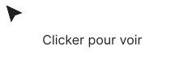

Kamila Comme — designer Brand & Digital à Paris, en recherche d’un CDI pour 2026
Je suis Kamila Comme, designer Brand & Digital avec un Mastère en Direction Artistique et 5 ans d’expérience. Je transforme une idée en marque qui marche sur plusieurs supports. En recherche d’un CDI pour 2026.
Je suis Kamila Comme, designer Brand & Digital avec un Mastère en Direction Artistique et 5 ans d’expérience. Je transforme une idée en marque qui marche sur plusieurs supports. En recherche d’un CDI pour 2026.
Je suis Kamila Comme, designer Brand & Digital avec un Mastère en Direction Artistique et 5 ans d’expérience. En recherche d’un CDI pour 2026.
Ce site est un portfolio personnel. Voici les informations légales qui s’y rapportent.
Éditeur du site
Ce site est édité par Kamila Comme, à titre personnel et non professionnel (portfolio, aucune vente de produit ou service en ligne). Contact : comme.kamila@gmail.com
Directeur de la publication
Kamila Comme
Hébergement
Ce site est hébergé par : [NOM DE L’HÉBERGEUR]
Adresse : [ADRESSE DE L’HÉBERGEUR]
Contact : [CONTACT DE L’HÉBERGEUR]
Propriété intellectuelle
Le design, les textes, la structure et le code de ce site sont une création originale de Kamila Comme et sont protégés par le droit d’auteur. Toute reproduction, même partielle, sans autorisation préalable est interdite.
Certains visuels (mockups) présentés sur ce site sont des ressources tierces utilisées sous licence. Leurs droits restent la propriété de leurs auteurs respectifs.
Liens externes
Ce site contient des liens vers des projets et sites tiers. Kamila Comme n’est pas responsable du contenu de ces sites externes.
Responsable du traitement
Kamila Comme — comme.kamila@gmail.com
Ce site est un portfolio. Il ne contient aucun formulaire, aucune création de compte, et ne collecte aucune donnée personnelle directement auprès des visiteurs.
Données collectées : uniquement via Google Analytics 4
Ce site utilise Google Analytics 4, un outil de mesure d’audience fourni par Google Ireland Limited. Les données collectées (adresse IP anonymisée, pages consultées, durée de visite, type d’appareil et navigateur) permettent de comprendre la fréquentation du site et l’intérêt porté aux différents projets présentés.
Finalité
Mesurer l’audience du site et améliorer le contenu proposé aux visiteurs.
Base légale
Le dépôt de ces cookies repose exclusivement sur le consentement du visiteur, recueilli via le bandeau cookies affiché à l’arrivée sur le site. Aucune donnée n’est collectée avant ce consentement.
Cookies utilisés
Seuls des cookies de mesure d’audience (Google Analytics) sont utilisés. Ce site n’utilise aucun cookie publicitaire, marketing ou de réseau social.
Durée de conservation
Les données sont conservées 14 mois maximum, conformément aux recommandations de la CNIL.
Transfert de données hors Union européenne
Google Analytics peut transférer certaines données vers les États-Unis. Ce transfert est encadré par le cadre juridique EU-US Data Privacy Framework, garantissant un niveau de protection adéquat.
Vos droits
Conformément au RGPD, vous disposez d’un droit d’accès, de rectification, d’effacement et d’opposition concernant vos données. Vous pouvez retirer votre consentement à tout moment en modifiant votre choix via le bandeau cookies ou en supprimant les cookies de votre navigateur.
Pour exercer ces droits, vous pouvez contacter : comme.kamila@gmail.com
Vous disposez également du droit d’introduire une réclamation auprès de la CNIL (www.cnil.fr) si vous estimez que vos droits ne sont pas respectés.
